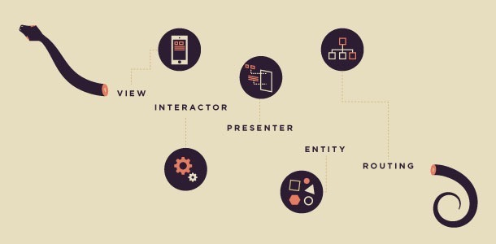

Press spacebar to go to next slide
iOS applications architecture
with VIPER
Oleksandr Yefremov
Mobile developer / Android team lead at

yefremov.oleksandr@gmail
Github profile
Why replace MVC?
"Does this new code belong to View or Model?
Looks like neither, Controller then!"
MASSIVE VIEW CONTROLLER
VIPER is a guideline to building clean application architecture
by separating distinct layers of responsibility.

DEMO
VIPER issues and considerations:
Every component is Layer, not a single class
View-Presenter-Interactor : 1-1-1
Other components are reusable
CoreData.
Interactor and Data Manager layers
No state. Behaviour.
ReactiveCocoa friendly!
TDD
Mock View, rest of classes is PONSO. Mock Data Manager
Protocols everywhere.
A lot of classes!
Rambler Generamba.
Router types:
Router types:
1. Router / Wireframe
2. Router + Assembly. RamblerSegue. Submodules.
Not an exact instruction!
Each team makes it work their own way.
Questions!
- "Counter" demo app
https://github.com/oleksandr-yefremov/Counter - Introduction to VIPER (MutualMobile)
http://mutualmobile.github.io/blog/2013/12/04/viper-introduction/ - Architecting iOS Apps with VIPER (objc.io - Issue 13)
https://www.objc.io/issues/13-architecture/viper/ - Brigade’s Experience Using an MVC Alternative
https://medium.com/brigade-engineering/brigades-experience-using-an-mvc-alternative-36ef1601a41f - 250 Days Shipping With Swift and VIPER (by Brice Pollock from Coursera)
https://realm.io/news/altconf-brice-pollock-250-days-shipping-with-swift-and-viper/ - Must watch! VIPER — или то, о чем все говорят, но никто не рассказывает (Егор Толстой, Rambler&Co, in Russian or with ugly English sync translation ☹ )
http://mbltdev.ru/ - look for it in "Records" list to the right - Rambler projects and libraries, mentioned in speech at https://github.com/rambler-ios
- The Book of VIPER - in progress. in Russian, in English
- RamblerConferences - VIPER example app, covers a lot of aspects, rather complicated.
- VIPER McFlurry - framework for implementing VIPER architecture. Offers tools and components that help to start with or move to it.
- Generamba - code generator specialized in VIPER modules (but still configurable to anything else). Docs now only in Russian.
- The Book of VIPER - in progress. in Russian, in English